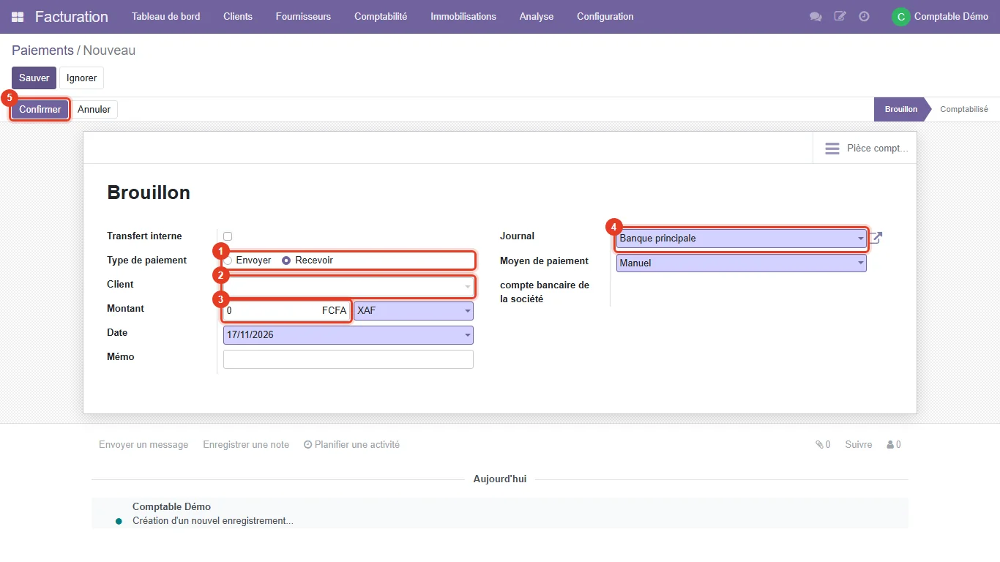

Objectif. Enregistrer un virement reçu avant de savoir quelles factures il règle.
Où dans Odoo 15Facturation › Clients › Paiements › Créer

Ce que vous faites
- Cliquez sur Créer ; type (1) : Recevoir de l'argent.
- Client (2), montant (3), journal de banque (4), date du relevé, mémo (référence du virement).
- Confirmez (5).
- Imputez ensuite le paiement : ouvrez la facture du client, cliquez sur Ajouter à côté du crédit en attente.
À vérifier avant de continuer
0 / 2À éviter.
- Ne laissez pas un encaissement non imputé en fin de mois.
Exercice sur la base de test
Enregistrez un virement de 2 000 000 de Kappa Shipping et imputez-le.